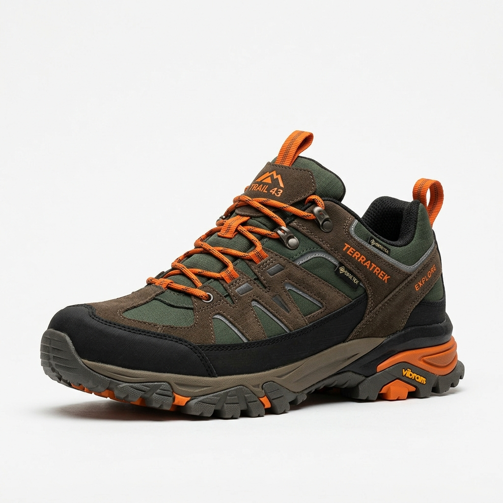

工藝級品質安全
每雙 AuraStep 鞋履均通過嚴格的耐折度、耐磨度及抗滑檢測。童鞋款式更全面使用無毒親膚材質，確保寶寶足部骨骼安全發育。
AuraStep 極光步履誕生於 2020 年，由一群人體工學專家、材料物理學家與時尚設計師共同創立。我們堅信，一雙好鞋不只需要外表出眾，更要能無感融入您的日常生活，呵護您的每一步健康。
💎 黃靖貽的鞋子專賣店｜讓您的每一步都走出自信與舒適
「舒適、時尚、極致」—— 給雙腳最頂級的呵護。
還在為找不到一雙完美合腳的鞋子煩惱，或是對那走久了就酸痛的足底無計可施嗎？黃靖貽的鞋子專賣店理解您對細節的堅持。不論您偏好哪一種【鞋子品牌】，我們不只是賣鞋，更是您雙腳的守護者。
👟 我們的核心服務
極致足部美學
完美尺碼測量：引進多元風格鞋款，並提供最精準的【鞋子尺寸】與【鞋子尺碼】測量服務，幫您找到專屬的靈魂伴侶。
全天候機能防護：網羅各大【運動鞋品牌】的好鞋，不論晴雨都為您提供最熱門的【防水鞋推薦】款式，採用高品質防水透氣材質，長效防潑水，讓雙腳始終保持乾爽。
專業運動與健康：針對不同腳型與運動需求，提供專屬的【慢跑鞋推薦】與【健走鞋推薦】系列，打造完美支撐。
職人等級穿搭細節
優雅與日常休閒：為您帶來最實用的【樂福鞋穿搭】靈感與【樂福鞋推薦】款式，徹底融入您的每日生活；更有休閒鞋、懶人鞋、白鞋等多種選擇，輕鬆駕馭各種場合。
職場安全防護：針對高風險工作環境提供專業【安全鞋推薦】，具備高規格鋼頭防護同時兼顧舒適度。
全方位細節護理
球場與競技精選：不論是日常重訓還是球場上的激烈競技，我們皆有豐富的【運動鞋推薦】與專業【籃球鞋推薦】選擇。
周邊與足部護理：除了提供舒適鞋墊與防污鞋套，更引進專業的【鞋子除臭】護理產品，解決長年累積的異味問題，還您清爽的穿著體驗。
💰 價格透明，品質看得見
我們深知顧客在乎鞋子價格與CP值的合理性，因此黃靖貽的鞋子專賣店堅持價格公開透明。
多元鞋款價錢：依照鞋款功能與材質分級定價，絕不亂喊價。
高質感與流行鞋款項目：清單列清、項目透明，讓您清楚每一分錢的價值。
到府服務預約：提供特定時間到府尺寸試穿與外送預約，讓忙碌的您足不出戶也能享受極致專業。
⭐ 為什麼選擇黃靖貽的鞋子專賣店？
專業技術與細節控：每一位門市夥伴都對鞋款功能與足部健康有近乎苛求的堅持。
高品質材料選用：只挑選對皮膚最溫和、保護力與支撐力最強的優質鞋款。
網友好評推薦：我們是 PTT 與 Dcard 網友熱議的優質鞋店推薦，口碑保證。
立即預約您的雙腳美學體驗！
📍 地址：[請填入您的店面地址]
📞 預約專線：[請填入您的電話]
💬 LINE 線上諮詢：[請填入 LINE ID]
黃靖貽的鞋子專賣店 —— We懂鞋，更懂愛鞋的你。
都市生活的快節奏，使得現代人每天平均要行走超過八千步。然而，不合腳或緩震差的鞋款，正是造成足底筋膜炎、膝蓋和關節慢性損傷的主因。
AuraStep 成立的初心非常單純：我們希望開發出一種能「吸收重力反衝」的智慧鞋款。歷經三年研發、超過一千次的高壓發泡測試，我們的專利 AURA-BOOST 中底技術終於誕生。它能吸收高達 90% 的行走地面衝擊力，並將其轉化為順暢前行的回彈能量。
我們將這項科技注入運動、休閒、居家涼拖以及童鞋之中，讓全家人都能在各種生活場景中享受無負擔的極致體驗。

每雙 AuraStep 鞋履均通過嚴格的耐折度、耐磨度及抗滑檢測。童鞋款式更全面使用無毒親膚材質，確保寶寶足部骨骼安全發育。
地球的每一步也需要被溫柔對待。我們使用回收海洋寶特瓶所編織的針織鞋面與天然軟木鞋墊，包裝亦全面採用 100% 可降解再生紙。
以符合亞洲人偏寬腳型的「微寬楦」設計為底，加上 OrthoLite 防菌抗菌除臭鞋墊，讓您從早晨通勤到深夜運動，依然乾爽如初。